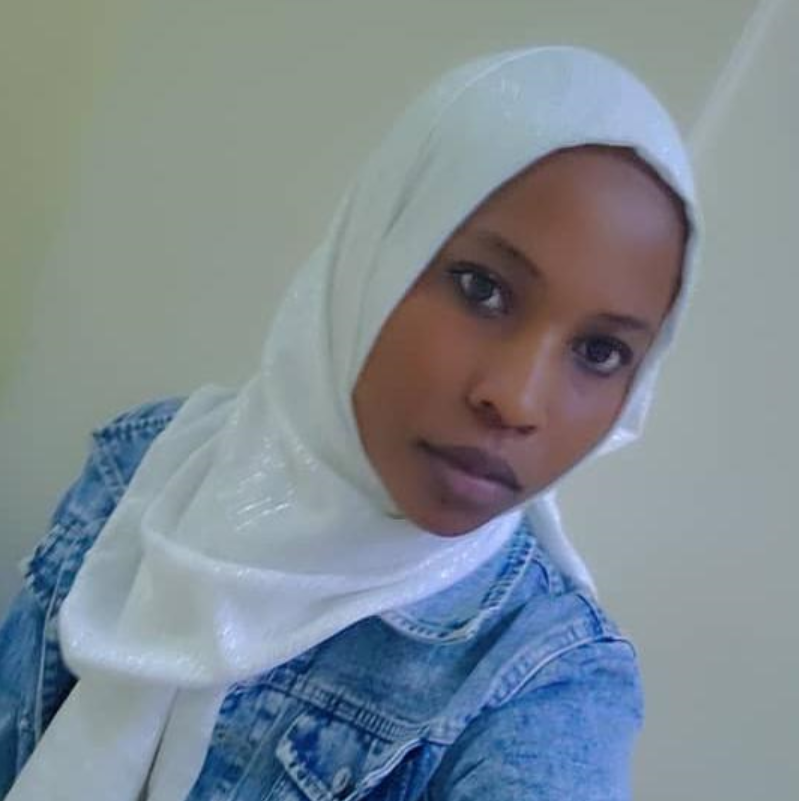

This website is a small space where I share things I enjoy, ideas I find interesting, and topics I am curious about.
I enjoy learning new things, exploring technology, and understanding how the digital world works.
In my free time, I like reading, listening to music, and discovering new ideas online.
Below is an image of me

Images help make websites more visual and engaging.
I often visit YouTube to learn and relax.
I also use Google to search for information.
The internet connects people from all over the world. Learning how websites work makes it easier to understand the digital space we interact with every day.
This page can grow and change over time as new ideas are added.
Created by: Jalia
Thank you for visiting!